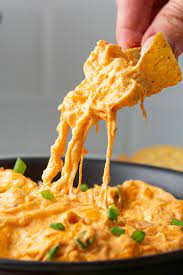

Buffalo Chicken Dip

ew appetizers bring a crowd together quite like warm, ooey-gooey, utterly irresistible
Buffalo chicken dip. The Allrecipes community can't get enough of this easy Buffalo
chicken dip with canned chicken — it has more than 4,000 rave reviews from happy home
cooks. Find out what all the fuss is about with this top-rated recipe.
Ingredients
- Chicken
- Cream Cheese
- Ranch Dressing
- Hot Sauce
- Cheese
Steps
- Heat the chicken and hot sauce in a skillet until heated through.
- Once heated mix in the cream cheese and ranch dressing
- Once the mixture is well blended add half of the chees and stir until incorporated
- Transfer the dip into a slow cooker
- sprinkle shredded cheese on top and cook on low until bubbly
- ENJOY!